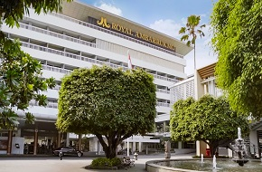
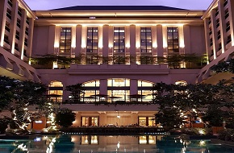

Hanya perlu menempuh waktu 20 menit dari bandara terdekat Bandara Adisucipto untuk menuju hotel ini. Dengan fasilitas sebanyak 280 kamar dengan berbagai tipe, Anda siap dimanjakan dan didukung untuk keperluan kunjungan ke Kota Pelajar ini.
Alamat : Jl Suryotomo No 31 Yogyakarta

ROYAL AMBARRUKMO HOTEL (bintang5)
ROYAL AMBARRUKMO HOTEL
Daftar Hotel Bintang 5 Yogyakarta urutan kedua
Untuk Anda yang melakukan perjalanan bisnis, hotel ini menjadi pilihan yang direkomendasikan karena telah menyediakan business center khusus untuk wisatawan bisnis. Fasilitas-fasilitas seperti hotel berbintang 5 lainnya seperti sauna, fitness center, lounge serta kolam renang juga tersedia di sini.
Alamat : Jl. laksda Adisucipto No 81, Caturtunggal, Sleman, Yogyakarta

HOTEL TENTREM (bintang 5)
HOTEL TENTREM
Daftar Hotel Bintang 5 Yogyakarta urutan ketiga
Fasilitas khas bintang 5 disediakan disini untuk para tamu. Diantaranya adalah galeri seni, tempat bermain anak, spa, pusat kebugaran dan kolam renang. Desain interior yang mewah dan apik akan Anda temui di setiap sudut ruangan. Dengan menginap di sini, Anda akan merasakan malam yang luar biasa memuaskan. Melihat segala fasilitasnya, tidak heran jika banyak acara tingkat nasional dan internasional memilih untuk melaksanakan pertemuan di sini.